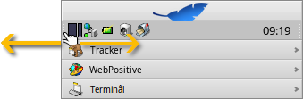
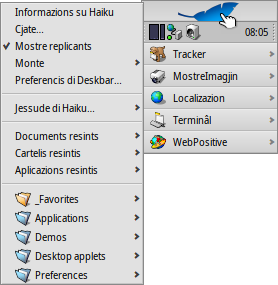
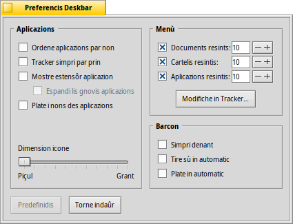
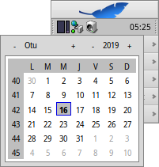
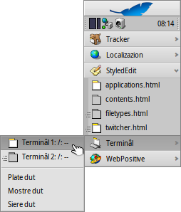

| Tabele |
|
Il menù Deskbar La guantiere La liste dai programs in esecuzion |
Deskbar
Il Deskbar al è chel piçul panel che in maniere predefinide si cjate tal angul in alt a drete dal schermi. Al è la version di Haiku de sbare des ativitâts di Windows cul so boton Start. Al conten il menù di Deskbar di dulà che si pues inviâ aplicazions e preferencis, une guantiere cuntun orloi e sot di chel, altris struments. In bas, une liste dai programs atualmentri in esecuzion.

You can move the Deskbar to any corner or as a bar along the upper or lower border of the screen by gripping the knobbly area on one side of the tray (see arrows above) and drag & drop it into the new position.
You can also fold it into a more compact layout by drag & dropping the knobbly area onto Deskbar's Leaf menu. Being only the height of a regular window tab, even windows that take up the whole screen won't obscure the Deskbar tray with its clock and icons.
Cjapant chel altri widget cui groputs de guantiere, tu puedis cambiâ la largjece dal Deskbar strissinant il mouse a drete o a çampe:
Un Deskbar plui larc al permet tantis plui iconis par rie te guantiere. In diplui al cjonce cetant di mancul i nons luncs des aplicazions inte liste dai programs in esecuzion, In particolâr se si dopre iconis plui grandis.
 Il menù Deskbar
Il menù Deskbar
Si vierç un menù cuant che si fâs clic te part superiôr dal Deskbar:
Informazions sul sisteme... - Al mostre cualchi informazion di base dal sisteme, licencis e i ricognossiments dal progjet Haiku.
Cjate... - Al vierç il dialic pe Interogazion.
Mostre replicants - Al mostre/plate il piçul widget dal Replicant che tu dopris par strissinâlu ator, par gjavâlu o par jentrâ tal so menù contestuâl.
Monte - Al ufrìs lis stessis opzions di cuant che al ven invocât dal clic diestri sul Scritori (see Montâ i volums).
Preferencis Deskbar... - Al vierç un panel par configurâ il Deskbar (viôt sot).
Jessude di Haiku - Al ufrìs lis opzions opûr .
documents, cartelis, aplicazions resintis - Liste dai ultins documents, cartelis aplicazions viertis di resint (viôt lis chi sot).
Applications, Demos, Deskbar applets, Preferences - Liste di aplicazions, dimostrazions, applet e preferencis instaladis.
Tu puedis zontâ colegaments a altris programs (o cualsisei cartele, document, interogazion e vie indenant) metintju in ~/config/settings/deskbar/menu/.
Preferencis di Deskbar

Il panel des preferencis di Deskbar si divît in trê sezions.
Aplicazions
Lis impostazions chi sot no si aplichin aes impostazions che tu âs instalât, ma al compuartament e al aspiet de liste des aplicazions in esecuzion.
| Al ordene la liste dai programs in esecuzion in ordin alfabetic. | ||
| Ancje se tu ordenis in ordin alfabetic, la vôs dal Tracker e restarà simpri la prime inte liste. | ||
| Al furnirà un piçul widget par mostrâ/platâ ducj i barcons di un program subite sot la sô vôs tal Deskbar. | ||
| I gnûfs programs inviâts a àn i lôr barcons pandûts in automatic sot lis lôr vôs tal Deskbar. | ||
| Al gjave lis etichetis di test des aplicazions in esecuzion. | ||
| Al adate la dimension des iconis des aplicazions in esecuzion. |
Menù
Infûr dai prins doi elements dal menù dal Deskbar, che a son fis, tu puedis personalizâ chei sot di .
Chi tu puedis stabilî il numar di documents resints, cartelis e aplicazions che a vegnin mostrâts intal lôr menù tal Deskbar, opûr no viodiju dal dut.
Il boton al vierç la cartele ~/config/settings/deskbar/menu/. Dentri tu cjatarâs i file e lis cartelis che a vegnin fûr tal Deskbar, come impostazion predefinide chescj a son , , , e .
Tu puedis eliminâ o zontâ vôs come colegaments a aplicazions, documents o ancje interogazions, al baste copiâ/eliminâ lis vôs su/di cheste cartele.
I programs instalâts di un pachet, a metin in automatic une vôs tal Deskbar. In base al numar di pachets che tu âs instalât, chest al pues deventâ un tic ingolfât. Se tu preferissis vê il plen control e viodi dome lis aplicazions che tu coleghis lì par cont to (magari categorizant in sot-cartelis), cussì al è ce mût che si fâs:
Tu creis un colegament de cartele dal menu in ~/config/settings/deskbar/ e i cambiis il non a menu_entries. Dal Terminâl si rive a fâ il lavôr cun:
ln -s ~/config/settings/deskbar/menu ~/config/settings/deskbar/menu_entries
Barcon
Tal ultin, lis preferencis pal barcon dal Deskbar.
| Il Deskbar al starà simpri parsore dai altris barcons. | ||
| The Deskbar pops to the front when the mouse pointer touches where the Deskbar meets the screen edge, and is lowered when it leaves the Desktop area. | ||
| Il Deskbar al ven ridusût a dome cualchi pixel e al comparirà dome se il pontadôr dal mouse ju tocjarà. |
La guantiere

Among other things, the tray is housing the clock. Hover the mouse over it to display the date in a tooltip. Left-click it to show a calendar. Right-click it to hide/show the clock or launch the Time preferences to set it.
Ducj i programs a puedin instalâ une icone te guantiere par furnî al utent une interface. Il sisteme e-mail, par esempli, al mostre un simbul diferent cuant che si à pueste no lete e al ufrìs un menù contestuâl par (par esempli) creâ o controlâ se si à gnove pueste. Controlôr dai procès al è un altri esempli che al dopre la sô icone te guantiere par dâ informazions (CPU/memorie doprade) e par ufrî un menù contestuâl.
La liste des aplicazions in esecuzion

Tu puedis passâ a une specifiche aplicazion in esecuzion fasint clic su la sô vôs tal Deskbar e sielzint il so/un dai soi barcons dal sot-menù. Fasint clic diestri tu puedis i barcons opûr e cun lôr la aplicazion interie.
Un MAIUSC CTRL clic suntune aplicazion al plate ducj i siei barcons, un CTRL clic ju torne a mostrâ.
When using the "expander" setting to show all windows of an application, you can middle-click on a window or app to start a new instance. For example, middle-clicking a running StyledEdit will open a new document window.
Maybe more useful: while holding SHIFT, a middle-click on a window closes it. Handy when you'd like to close some of many open Tracker windows, for example.
Se tu âs ativât i Espansôrs tes impostazions dal Deskbar, tu puedis espandi/striçâ la liste dai barcons subite sot de vôs di une aplicazion.
Denant di ogni barcon de aplicazion al è un simbul che al da informazions sul so stât. Un simbul clâr al significhe che al è un barcon visibil, un scûr che al minimizât. Trê liniis denant di un simbul al indiche che nol sta sul spazi di lavôr atuâl.